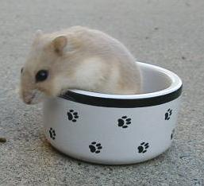

All lilacfawns are agouti -- which is the original pattern of hamsters in the wild. Agouti hamsters have off-white bellies and scallops on the side. Their hairs are also a different color at the roots (undercoat) than on the tips.
| Lilac Fawn Campbells Dwarf Hamsters | ||||||||||||
|  | ||||||||||||
| Lilac fawn (bbdd) is the two-gene color which is the combination of the opal and black-eyed argente (BEA) genes. Since both of these colors are recessive, the hamster must have two copies of both of these genes to be a lilac fawn. It is not difficult to breed lilac fawns if you have both an opal and a BEA -- but you must have both genes. To get lilac fawns, you would breed the opal to the BEA. All babies would be normal carry opal and BEA. You would then breed two of these normals together. From this pairing, you should get 9/16 normals, 3/16 opals, 3/16 BEAs, and 1/16 lilac fawns. (It is a bit trickier but still doable if you start with aniamls who only carry these genes.) All lilacfawns are agouti -- which is the original pattern of hamsters in the wild. Agouti hamsters have off-white bellies and scallops on the side. Their hairs are also a different color at the roots (undercoat) than on the tips. |
||||||||||||